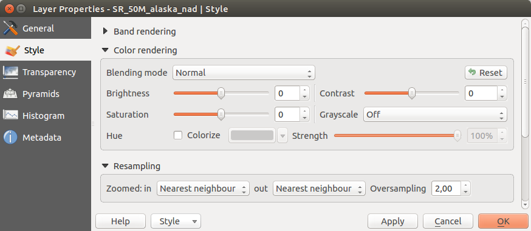

Fenêtre Propriétés de la couche raster
Pour voir et définir les propriétés d'une couche raster, double-cliquez sur le nom de la couche dans la légende de la carte ou faites un clic-droit son nom et choisissez Propriétés dans le menu qui apparaît. La fenêtre des Propriétés de la couche apparaîtra.
Il y a plusieurs onglets dans cette fenêtre:
Général
Style
Transparence
Pyramides
Histogramme
Métadonnées

Onglet Général
Informations sur la couche
L'onglet Général affiche des informations basiques sur le raster sélectionné, dont la source de la couche, le nom affiché dans la légende (qui peut être modifié), le nombre de colonnes, lignes et les valeurs no-data.
Système de coordonnées de référence
Le système de coordonnées de référence (SCR) est également affiché ici au format PROJ.4. S'il est incorrect, il peut être modifié en cliquant sur le bouton [Spécifier].
Visibilité dépendante de l'échelle
La visibilité en fonction de l'échelle se définit également dans cet onglet. Vous devez activer la case à cocher et définir une échelle appropriée pour l'affichage de vos données sur la carte.
Tout en bas, sont affichés un aperçu de la couche, son symbole de légende et sa palette.
Onglet Style
Rendu des bandes raster
KADAS propose quatre Types de rendu. Le choix s'effectue en fonction du type de données.
Couleur à Bandes Multiples - Si le fichier raster est multibande et contient plusieurs bandes (par exemple, avec une image satellite)
Palette - Si le fichier ne contient qu'une seule bande indexée (par exemple, pour les cartes topographiques)
Bande Grise Unique - (Une seule bande de gris). Le rendu de l'image sera gris. KADAS choisit ce rendu si ce fichier n'est ni multibande, ni une palette indexée, ni une palette continue (utilisée par exemple pour les cartes avec des reliefs ombrés)
Pseudo-Couleur à Banque Unique - vous pouvez utiliser ce rendu pour les fichiers contenant une palette continue ou des cartes en couleur (par exemple pour une carte des altitudes)
Couleur à bandes multiples
Avec ce type de rendu, trois bandes de l'image seront utilisées, chacune correspondant à la composante rouge, verte ou bleue de l'image colorée finale. Vous pouvez choisir parmi différentes méthodes d’Amélioration du contraste: Pas d'amélioration, Étirer jusqu'au MinMax, Étirer et couper jusqu'au MinMax ou Couper jusqu'au MinMax.

Ces options vous offrent de nombreuses possibilités de modifier l'apparence de votre couche raster. Premièrement vous devez connaître la plage de valeurs de votre image. Vous pouvez utiliser pour cela l’Emprise et cliquer sur [Charger]. Pour les valeurs de Min et de Max de vos bandes, KADAS vous laisse le choix entre une Précision  Estimée (plus rapide) ou Réelle (plus lente).
Estimée (plus rapide) ou Réelle (plus lente).
Maintenant vous pouvez échelonner les couleurs grâce à la partie Charger les valeurs min/max. Beaucoup d'images n'ont que très peu de valeurs très faibles ou très élevées. Ces extrêmes peuvent être ignorés en utilisant l'option Bornes d'exclusion des valeurs extrêmes. Par défaut la plage proposée va de 2% à 98% des valeurs de données et peut être ajustée manuellement. Avec ce paramétrage, l'aspect gris de l'image peut disparaitre. Avec l'option  Min / max, KADAS crée une table de couleur à partir de toutes les données de l'image originale (par exemple, KADAS crée une table de couleur avec 256 valeurs, si vous avez des bandes codées sur 8 bits). Vous pouvez également calculer votre table de couleur en utilisant l'option Moyenne +/- écart-type x
Min / max, KADAS crée une table de couleur à partir de toutes les données de l'image originale (par exemple, KADAS crée une table de couleur avec 256 valeurs, si vous avez des bandes codées sur 8 bits). Vous pouvez également calculer votre table de couleur en utilisant l'option Moyenne +/- écart-type x  . Ainsi, seules les valeurs comprises dans cet intervalle (écart-type ou multiple de l'écart-type) seront considérées. Ceci est utile lorsqu'un ou deux pixels ont des valeurs anormalement élevées et ont un impact négatif sur le rendu du raster.
. Ainsi, seules les valeurs comprises dans cet intervalle (écart-type ou multiple de l'écart-type) seront considérées. Ceci est utile lorsqu'un ou deux pixels ont des valeurs anormalement élevées et ont un impact négatif sur le rendu du raster.
Tous les calculs peuvent également être réalisés pour l'emprise Actuelle.
Visualiser une seule bande d'un raster multibande
Si vous désirez visualiser une seule bande d'une image multibande (par exemple la bande rouge), vous pouvez penser que vous pourriez définir les bandes Verte et Bleue à “Non définie”. Mais ce n'est pas la manière correcte. Pour afficher la bande Rouge, définissez le type d'image à Bande grise unique, puis sélectionnez la bande Rouge comme bande à utiliser pour le gris.
Palette
C'est l'option standard pour les fichiers à une seule bande qui incluent déjà une table de couleurs, où à chaque valeur de pixel a été assignée une couleur. Dans ce cas, la palette est utilisée automatiquement. Si vous désirez modifier l'assignement des couleurs pour certaines valeurs, double cliquez simplement sur la couleur et la boîte de dialogue de Sélection de couleur apparaîtra. Il est maintenant possible depuis KADAS 2.2 d'assigner un label aux valeurs de couleur. L'étiquette apparaîtra alors dans la légende de la couche raster.

Amélioration de contraste
Lors de l'ajout d'une couche raster GRASS, l'option Amélioration de contraste sera automatiquement Étirer jusqu'au MinMax, quelles que soient les options générales de KADAS définies pour cette option.
Bande grise unique
Ce type de rendu vous permet de représenter une bande d'un raster par un Dégradé de couleur: Noir vers blanc ou Blanc vers noir. Vous pouvez choisir un Min et un Max en choisissant d'abord une Emprise puis en cliquant sur [Charger]. KADAS peut utiliser les valeurs Min et Max Estimée (plus rapide) ou utiliser les valeurs Réelle (plus lent).

Grâce à la partie Charger les valeurs min/max, vous pouvez échelonner les couleurs. Les valeurs extrêmes peuvent être ignorées en utilisant l'option Bornes d'exclusion des valeurs extrêmes. Par défaut la plage proposée va de 2% à 98% des valeurs de données et peut être ajustée manuellement. Avec ce paramétrage, l'aspect gris de l'image peut disparaitre. D'autres réglages peuvent être effectués via les boutons Min / max and Moyenne +/- écart-type x . Le premier crée une table de couleur à partir de toutes les données de l'image originale alors que le deuxième crée une table de couleur qui ne considère que les valeurs comprises dans l'intervalle constitué par l'écart-type ou un multiple de l'écart-type. Ceci est utile lorsqu'un ou deux pixels ont des valeurs anormalement élevées et ont un impact négatif sur le rendu du raster.
Pseudo-couleur à bande unique
C'est une option de rendu pour les fichiers à bande unique, incluant une palette de couleurs continues. Vous pouvez aussi créer des palettes de couleurs pour les fichiers à bande unique

Trois manières de faire une interpolation de couleurs sont disponibles:
Discrète
Linéaire
Exacte
Sur la partie gauche, le bouton  Ajouter une valeur manuellement, permet d'ajouter une valeur individuelle à la table de couleurs. Le bouton
Ajouter une valeur manuellement, permet d'ajouter une valeur individuelle à la table de couleurs. Le bouton  Supprimer la valeur sélectionnée efface une valeur et Trier les éléments de la palette de couleurs permet de trier la table de couleurs en fonction des valeurs de pixels. En double-cliquant sur une valeur, vous pouvez l'éditer manuellement. Un double-clic sur une couleur ouvre la fenêtre Modifier la couleur où vous pouvez la modifier. De plus, vous pouvez ajouter une étiquette de légende pour chaque valeur (mais cette information n'apparaîtra pas lors de l'utilisation de l'outil d'identification). Vous pouvez également
Supprimer la valeur sélectionnée efface une valeur et Trier les éléments de la palette de couleurs permet de trier la table de couleurs en fonction des valeurs de pixels. En double-cliquant sur une valeur, vous pouvez l'éditer manuellement. Un double-clic sur une couleur ouvre la fenêtre Modifier la couleur où vous pouvez la modifier. De plus, vous pouvez ajouter une étiquette de légende pour chaque valeur (mais cette information n'apparaîtra pas lors de l'utilisation de l'outil d'identification). Vous pouvez également  Charger une palette de couleur depuis la bande, si une table de couleurs a été définie pour la bande. Enfin vous pouvez utiliser les boutons
Charger une palette de couleur depuis la bande, si une table de couleurs a été définie pour la bande. Enfin vous pouvez utiliser les boutons  Charger une palette de couleur depuis un fichier ou
Charger une palette de couleur depuis un fichier ou  Exporter une palette de couleur vers un fichier pour importer ou exporter une table de couleur depuis ou vers une autre session.
Exporter une palette de couleur vers un fichier pour importer ou exporter une table de couleur depuis ou vers une autre session.
Sur la partie droite, il est possible de Générer une nouvelle palette de couleur. Pour le Mode de classification par  Intervalles égaux, vous n'avez qu'à choisir le nombre de Classes et cliquez sur le bouton Classer. Vous pouvez inverser l'ordre des couleurs de la palette en cochant la case
Intervalles égaux, vous n'avez qu'à choisir le nombre de Classes et cliquez sur le bouton Classer. Vous pouvez inverser l'ordre des couleurs de la palette en cochant la case  Inverser. Dans le cas d'une classification par Mode Continu, KADAS crée automatiquement les classes en fonction des Min et Max. La partie située en dessous, Charger les valeurs min/max, permet d'ajuster ces valeurs. En effet, beaucoup d'images n'ont que très peu de valeurs très faibles ou très élevées. Ces extrêmes peuvent être ignorés en utilisant l'option Bornes d'exclusion des valeurs extrêmes. Par défaut la plage proposée va de 2% à 98% des valeurs de données et peut être ajustée manuellement. Avec ce paramétrage, l'aspect gris de l'image peut disparaitre. Avec l'option Min / max, KADAS crée une table de couleur à partir de toutes les données de l'image originale (par exemple, KADAS crée une table de couleur avec 256 valeurs, si vous avez des bandes codées sur 8 bits). Vous pouvez également calculer votre table de couleur en utilisant l'option Moyenne +/- écart-type x . Ainsi, seules les valeurs comprises dans cet intervalle (écart-type ou multiple de l'écart-type) seront considérées.
Inverser. Dans le cas d'une classification par Mode Continu, KADAS crée automatiquement les classes en fonction des Min et Max. La partie située en dessous, Charger les valeurs min/max, permet d'ajuster ces valeurs. En effet, beaucoup d'images n'ont que très peu de valeurs très faibles ou très élevées. Ces extrêmes peuvent être ignorés en utilisant l'option Bornes d'exclusion des valeurs extrêmes. Par défaut la plage proposée va de 2% à 98% des valeurs de données et peut être ajustée manuellement. Avec ce paramétrage, l'aspect gris de l'image peut disparaitre. Avec l'option Min / max, KADAS crée une table de couleur à partir de toutes les données de l'image originale (par exemple, KADAS crée une table de couleur avec 256 valeurs, si vous avez des bandes codées sur 8 bits). Vous pouvez également calculer votre table de couleur en utilisant l'option Moyenne +/- écart-type x . Ainsi, seules les valeurs comprises dans cet intervalle (écart-type ou multiple de l'écart-type) seront considérées.
Rendu des couleurs
Pour chaque type de Rendu par bande, des options de Rendu de la couleur sont disponibles.
Vous pouvez réaliser des effets spéciaux sur le rendu de vos rasters en utilisant un des modes de fusion.
D'autres paramètres permettent de modifier la Luminosité, la Saturation et le Contraste. Vous pouvez également utiliser un Dégradé de gris et le faire Par clarté, Par luminosité, ou Par moyenne. Pour une teinte de couleur, vous pouvez en modifier la Force
Ré-échantillonnage
Les options de Ré-échantillonnage déterminent l'apparence d'un raster quand vous zoomez ou dé-zoomez. Différents modes de ré-échantillonnage permettent d'optimiser l'apparence d'un raster. Ils calculent une nouvelle matrice de valeurs via une transformation géométrique.

En appliquant la méthode Plus proche voisin, le raster peut apparaître pixelisé lorsque l'on zoome dessus. Ce rendu peut être amélioré en choisissant les méthodes Bilinéaire ou Cubique qui adoucissent les angles. L'image est alors lissée. Ces méthodes sont adaptées par exemple aux rasters d'élévation.
Onglet Transparence
KADAS permet d'afficher chaque raster à des niveaux de transparence différents. Utilisez le curseur de transparence  pour indiquer dans quelle mesure les couches sous-jacentes (s'il y en a) pourront être visibles à travers cette couche raster. Cela est très utile, si vous désirez superposer plus d'une couche raster (par exemple une carte des reliefs ombrés superposée à une carte raster classifiée). Cela donnera un rendu proche d'un rendu en trois dimensions.
pour indiquer dans quelle mesure les couches sous-jacentes (s'il y en a) pourront être visibles à travers cette couche raster. Cela est très utile, si vous désirez superposer plus d'une couche raster (par exemple une carte des reliefs ombrés superposée à une carte raster classifiée). Cela donnera un rendu proche d'un rendu en trois dimensions.
De plus, vous pouvez entrer une valeur raster qui sera traitée comme NODATA dans Valeur nulle supplémentaire.
Un moyen encore plus flexible de personnaliser la transparence est d'utiliser la section Options de transparence personnalisée. La transparence de chaque pixel peut être définie dans cet onglet.
Par exemple, pour donner une transparence de 20% à l'eau sur notre raster d'exemple landcover.tif, les étapes suivantes sont nécessaires:
Chargez le raster
landcover.tif.Ouvrez la boîte de dialogue Propriétés de la couche en double-cliquant sur le nom du raster dans la légende ou avec un clic droit et en choisissant Propriétés dans le menu qui apparaît.
Sélectionnez l'onglet Transparence.
Dans la liste Bande de transparence, choisissez Aucune.
Cliquez sur le bouton
Ajouter des valeurs manuellement. Une nouvelle ligne apparait dans la liste des pixels.Entrez la valeur raster dans les colonnes De et Vers (mettez la valeur 0) puis ajustez la transparence à 20%.
Cliquez sur le bouton [Appliquer] et regardez la carte.
Vous pouvez répéter les étapes 5 et 6 pour personnaliser la transparence d'autres valeurs.
Comme vous pouvez le voir, il est assez facile de définir une transparence personnalisée, mais cela peut prendre un peu de temps. Par conséquent, vous pouvez utiliser le bouton  Exporter dans un fichier pour sauver vos paramètres de transparence dans un fichier. Le bouton Importer depuis le fichier charge vos paramètres de transparence et les applique à la couche raster actuelle.
Exporter dans un fichier pour sauver vos paramètres de transparence dans un fichier. Le bouton Importer depuis le fichier charge vos paramètres de transparence et les applique à la couche raster actuelle.
Onglet Métadonnées
L'onglet Métadonnées affiche de nombreuses informations sur la couche raster, dont les statistiques sur chaque bande de la couche raster. Les informations sont regroupées par section: Description, Attribution, URL Métadonnées et Propriétés. Les statistiques sont recueillies à la demande, de sorte qu'il est possible que les statistiques sur une couche n'aient pas encore été collectées.